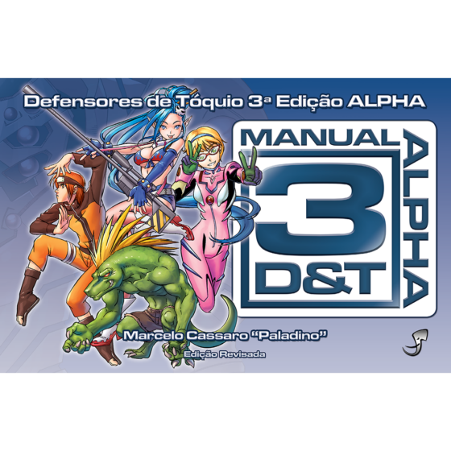

Já Jogou o RPG?

Com o 3d&t vocẽ pode ter essa experiência com muita praticidade! Muito bom para introduzir novos jogadores, você podera iniciar uma campanha com mais praticidade, podera trazer mais enfâse na narrativa do que em regras rigorosas. Você precisa entrar no personagem e vivenciar a aventura como um outro "eu" e assim como no papel de quem dirige a narrativa o "mestre" ele deve ser imparcial e astuto guiando toda galera focando sempre na diversão no grupo!